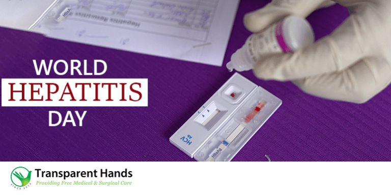

INTRODUCTION
It has become a bit of a norm to address hepatitis as a silent killer. However, when you look at the numbers, it sounds a little ludicrous to dub hepatitis as silent. The killer disease might be covert in its method of killing, but it certainly is not an enemy that picks and chooses its moments. No, the curse of hepatitis doesn’t make any discrimination. It is a threat that no one is immune from. However, if one is careful and adopts certain preventive measures, avoiding hepatitis is not impossible. To raise awareness about those preventive measures, world hepatitis day is celebrated every year. In this brief, we are going to highlight the importance of world hepatitis day by discussing everything that you should know about this day.
WORLD HEPATITIS DAY
A Recap Before we jump into the details of world hepatitis day, it makes sense to recap the disease itself. Well, hepatitis is characterized by liver inflammation. The etiology of the disease is mostly viral, however, other factors can contribute to the disease as well. These include secondary reasons like alcohol, drugs, and in rare cases, autoimmune hepatitis. Let us recall the critical role of the liver in our body. Apart from its key function of bile production, the liver is also responsible for the filtration of toxins and the synthesis of blood proteins like albumin. The liver’s functions are not the subject matter of this discussion, but they give an idea about how things would be if the liver stopped working normally. So, you can realize why hepatitis is such a big problem!

INTRODUCTION
We will run out of words if we were to write to paras signifying the importance of charity in society. The concept of charity is synonymous with feelings of empathy and sympathy, the value that it adds to social bonding is immense. Expecting an interaction between different societal classes on an equal basis is almost childishly foolish unless there exists a relationship between members of these different classes. A relationship that honours core values like inclusiveness, equality, integrity, and compassion to name a few. The role of charity in creating such a relationship is pivotal, and to commemorate that role, an international day of charity is celebrated every year. And that’s what we are going to talk about in this discussion! If this is the first time you have heard about this day, there is plenty for you to learn from this discussion, we can assure you that! .
When is the international day of charity?
Before we bore you with a history lesson, let us reveal the date on which international day of charity is celebrated every year. Drum rolls. It is celebrated on the fifth of every September, and the reason why it is celebrated on the aforementioned day will make your heart full of joy! The date was chosen to commemorate the anniversary of the passing away of Mother Teresa. There couldn’t have been a more suitable candidate to name the day after, we are all indebted to Mother Teresa for her efforts in making this world a better place for the underprivileged community. Not that her noble work needs any validations or medals, but it is pertinent to mention here that Mother Teresa received a Nobel Prize for peace in the year 1979. Nice knowing about one date which has two-fold historical value, don’t you agree?